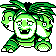
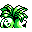

#103
Exeggutor
GrassPsychic
Legend has it that on rare occasions, one of its heads will drop off and continue on as an EXEGGCUTE
Base stats Total 455
HP95
Attack95
Defense85
Speed55
Special125
Details
- Species
- Coconut
- Height
- 6'07"
- Weight
- 265.0 lb
- Catch rate
- 45
- Base exp
- 212
- Growth
- Slow
Level-up moves
LevelMoveType
StartBarrageGrass
StartHypnosisPsychic
Lv 9AbsorbGrass
Lv 12Leech SeedGrass
Lv 16Stun SporeGrass
Lv 17ConfusionPsychic
Lv 25Mega DrainGrass
Lv 28StompNormal
Lv 31ReflectPsychic
Lv 38SolarbeamGrass
Evolution
Evolves from Exeggcute
Where to find
Not found in the wild — evolve, trade or catch it elsewhere.
TM / HM
TM03 Swords DanceTM06 ToxicTM08 Body SlamTM09 Take DownTM10 Double-EdgeTM15 Hyper BeamTM21 Mega DrainTM22 SolarbeamTM26 EarthquakeTM29 PsychicTM30 TeleportTM31 MimicTM32 Double TeamTM33 ReflectTM34 BideTM36 SelfdestructTM40 Sludge BombTM42 Dream EaterTM44 RestTM46 PsywaveTM47 ExplosionTM50 SubstituteHM04 StrengthHM05 Flash